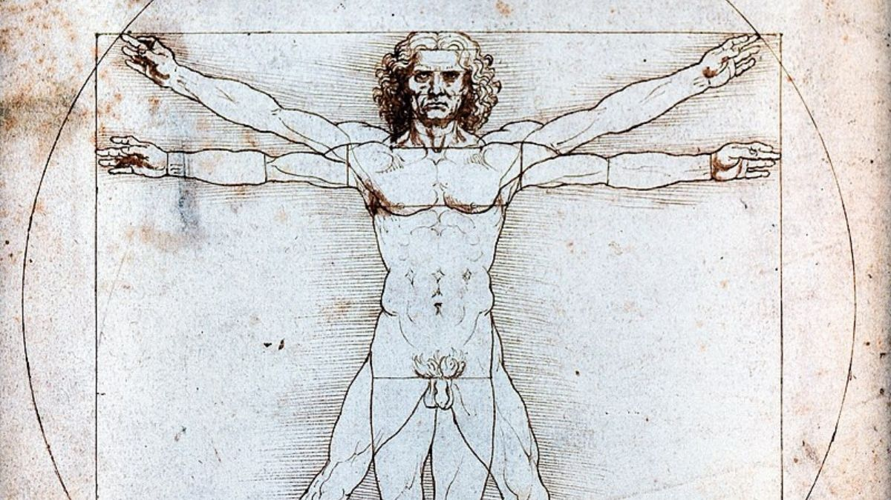

DEL SEGLE XIV AL RENAIXEMENT
De la crisi de l'escolàstica a la nova ciència: el llarg camí de transformació intel·lectual que fa possible Descartes i el pensament modern.
"El llibre de la natura està escrit en llenguatge matemàtic." — Galileu Galilei
El procés en cinc grans ruptures
S. XIV · Ockham
Nominalisme: trenca la síntesi escolàstica. Separa fe i raó. Allibera la raó per investigar la natura.
S. XV–XVI · Humanisme
La cultura deixa de girar entorn la teologia. Confiança en les capacitats humanes.
S. XVI · Maquiavel + Reforma
La política i la consciència individual s'emancipen de l'autoritat eclesiàstica.
SS. XVI–XVII · Revolució científica
Copèrnic, Kepler, Galileu. Un nou criteri de veritat: observació i matemàtiques.
S. XVII · Descartes
El gran sistematitzador filosòfic. Raó autònoma, mètode rigorós, certesa indubtable.
La pregunta que articula tot el procés
Quin criteri pot garantir la certesa del coneixement?
Tradició
Desacreditada
Autoritat
En crisi
Raó autònoma
→ Descartes
S. XIV · La ruptura decisiva
Un segle de crisi que prepara la modernitat
Crisi religiosa
Cisma d'Occident, desprestigi del papat. L'autoritat espiritual de l'Església es fragmenta.
Crisi demogràfica
La Pesta Negra (1347–1351) mata un terç de la població europea. Crisi existencial profunda i desconfiança en l'ordre establert.
Crisi política
Conflictes entre poders seculars i eclesiàstics. El poder temporal reclama autonomia respecte de Roma.
Crisi intel·lectual
Esgotament de l'escolàstica tardana. La gran síntesi tomista fe-raó es revela fràgil. La raó necessita un espai propi.
Franciscà i filòsof "nominalista", Ockham representa un punt d'inflexió fonamental en la historia del pensament occidental.
Nega l'existència real dels universals. Només existeixen individus concrets; els conceptes universals són noms (nomina) creats per la ment, no realitats independents. Cop mortal a la metafísica escolàstica.
La raó no pot demostrar racionalment les veritats de la fe. La teologia no és una ciència en sentit estricte. Fe i raó tenen àmbits separats i mètodes incompatibles.
"No cal multiplicar entitats sense necessitat."
Aquest principi de simplicitat anticipa una nova actitud metodológica: sobria, crítica i no sotmesa a construccions metafísiques excessives. La raó queda alliberada de justificar la fe, però guanya autonomia per investigar el món natural.
👉 Amb Ockham, la raó queda alliberada de la tasca de justificar racionalment la fe i guanya autonomia per investigar el món natural. Aquest gest prepara el terreny tant per a la ciència moderna com per al racionalisme posterior.
SS. XV–XVI · Un nou esperit cultural
Humanisme, política i escepticisme: tres ruptures amb el món medieval
Un canvi radical de sensibilitat
L'humanisme no és encara ciència moderna, però representa un canvi radical de sensibilitat: la cultura deixa de girar exclusivament entorn de la teologia. L'art, la política, la historia i la natura esdevenen camps d'estudi legítims per si mateixos.
Edat Mitjana
Déu com a centre. L'ésser humà és criatura limitada i pecadora. El coneixement serveix la fe.
Renaixement
L'ésser humà com a centre. Dignitat i capacitats humanes. El coneixement pot ser autònom.
"He modelat la teva forma ni celeste ni terrenal, perquè tu, com a lliure i sobirà artífex, et donis la forma que prefereixis." — Pico della Mirandola, Discurs sobre la dignitat de l'home (1486)
El naixement de la filosofia política moderna
Amb Maquiavel neix una nova manera de pensar la política. La seva aportació fonamental: separar la política de la moral i de la teologia, i analitzar el poder tal com és, no com hauria de ser.
La reflexió política es basa en l'experiència histórica i no en ideals abstractes. La política és analitzada com un àmbit autònom amb dinàmiques pròpies.
"El fi justifica els mitjans." (Atribuïda popularment a Maquiavel, però probablement anotada per Napoleó en llegir El Príncep)
Trencament amb la tradició
La política medieval estava subordinada a una concepció moral i teológica del bé. El criteri d'avaluació era la conformitat amb una norma transcendent.
Nou criteri: l'eficàcia
El criteri d'avaluació de l'acció política passa a ser l'eficàcia en la conservació i l'estabilitat del poder. La política és un camp de coneixement empíric i racional.
La política com a àmbit autònom
Igual que la ciència s'emanciparà de la teologia, la política s'emancipa de la moral religiosa. Forma part del gran moviment cap a la modernitat.
💡 Maquiavel contribueix a consolidar la idea moderna que el coneixement ha de basar-se en l'anàlisi racional dels fets, i no en l'autoritat o la tradició. Anticipa el mètode observacional de la nova ciència.
La desautorització de la mediació eclesiàstica
La Reforma protestant de Martí Luter no és un moviment filosòfic en sentit estricte, però contribueix decisivament a la crisi del model medieval d'autoritat.
En defensar la lectura directa de l'Escriptura i el valor de la consciència individual, es qüestiona la funció mediadora exclusiva de l'Església com a garant del saber i de la veritat.
"La meva consciència és captiva de la paraula de Déu. No puc ni vull revocar res." — Martí Luter, Dieta de Worms (1521)
La Reforma no reivindica la raó autònoma —és un moviment religiós, no filosòfic— però l'atomització de l'autoritat que provoca obre espai per a qualsevol forma d'autonomia intel·lectual.
Resposta al col·lapse del saber tradicional
En el context de descrèdit de l'autoritat i de crisi del criteri de veritat, emergeix una actitud intel·lectual que podem anomenar escepticisme modern. Inspirat parcialment en l'escepticisme antic, i representat per Michel de Montaigne, aquest corrent posa en dubte la capacitat humana d'assolir un coneixement cert i universal.
Davant la pluralitat d'opinions, la fragilitat dels sentits i la inestabilitat de la raó, l'escepticisme proposa la suspensió del judici com a actitud prudent.
"Que sé jo?" (Que sais-je?) — Montaigne, divisa personal
Com a símptoma
És una resposta al col·lapse del sistema escolàstic i a la pèrdua dels fonaments sòlids del saber tradicional. No és una mera posició teòrica, sinó un diagnòstic del moment.
Com a problema
Si es porta fins a les últimes conseqüències, fa impossible qualsevol coneixement ferm. El saber queda paralitzat per la desconfiança radical.
Descartes assumirà provisionalment el dubte escèptic, però no per quedar-s'hi, sinó per superar-lo mitjançant la recerca d'una certesa indubtable. L'escepticisme no és un enemic accidental de Descartes, sinó el símptoma intel·lectual del moment que ell intenta superar. Per això el pren seriosament per neutralitzar-lo.
SS. XVI–XVII · Un nou paradigma de veritat
Trencament amb la física aristotèlica i nou criteri de veritat
La nova ciència no és tan sols un conjunt de descobriments nous: és un trencament epistemològic. Canvia el fonament del coneixement: de l'autoritat i els textos antics a l'observació, l'experimentació i les matemàtiques.
El model heliocèntric
Copèrnic proposa el model heliocèntric: el Sol —no la Terra— es troba al centre de l'univers. Més enllà del seu contingut astronòmic, aquest model té un impacte filosòfic enorme.
La Terra deixa de ser el centre de l'univers.
Trencament amb mil anys de cosmologia aristotèlico-ptolemaica.
L'ésser humà perd la seva centralitat còsmica.
La creació no gira al voltant de nosaltres. Crisi de l'antropocentrisme medieval.
Es qüestiona l'autoritat de la tradició i de les Sagrades Escriptures.
Si la Bíblia sembla dir que el Sol es mou i Copèrnic demostra el contrari, qui té raó?
Model Medieval
🌍
Geocèntric
Aristòtil + Ptolomeu. La Terra al centre. Els astres giren en esferes perfectes. Autoritat de segles.
Model Nou
☀️
Heliocèntric
Copèrnic. El Sol al centre. La Terra és un planeta com els altres. Basat en càlculs.
Les lleis del moviment planetari
Kepler aprofundeix el gir copernicà formulant lleis matemàtiques precises del moviment planetari. Amb ell, la natura apareix com un ordre matemàtic accessible a la raó humana.
1a Llei · Les òrbites el·líptiques
Els planetes no es mouen en circumferències perfectes sinó en el·lipses. Trencament d'un dogma platònico-medieval: les circumferències representaven "perfecció còsmica".
2a Llei · Les àrees iguals
El planeta descriu àrees iguals en temps iguals. La velocitat no és constant: és calculable matemàticament.
3a Llei · La relació períodes-distàncies
El quadrat del període orbital és proporcional al cub de la distància. Equació matemàtica universal que lliga tots els planetes del sistema solar.
Contra Aristòtil
El cel no és immutable ni perfecte. Les trajectòries no són circulars. La cosmologia qualitativa aristotèlica queda superada.
Contra el platonisme medieval
Les esferes perfectes i les trajectòries circulars representaven la "perfecció" còsmica platònica. Les el·lipses demostren que el cosmos no segueix els ideals geomètrics humans.
💡 La natura no imita els nostres ideals geomètrics: és la raó qui descobreix les lleis de la natura. Un canvi copernicà en el mètode.
Experimentació, telescopi i matemàtiques
Galileu consolida definitivament el nou paradigma: defensa l'experimentació, utilitza el telescopi per obtenir proves empíriques i afirma que "el llibre de la natura està escrit en llenguatge matemàtic".
"La filosofia natural és escrita en aquest immens llibre que tenim contínuament obert davant dels ulls —l'univers— però no es pot entendre sense primer aprendre a comprendre la llengua en la qual és escrit: les matemàtiques." — Galileu
La Lluna no és perfecta
Muntanyes i cràters. Refuta la idea aristotèlica de cossos celestes perfectes i llisos.
El Sol té taques
El Sol canvia → el cel no és immutable. Contra l'aristotelisme.
La Via Làctia és feta d'estrelles
L'univers és molt més gran i complex del que es pensava.
Júpiter té satèl·lits
No tot gira al voltant de la Terra. Prova decisiva contra el geocentrisme.
Les fases de Venus
Venus presenta totes les fases → gira al voltant del Sol. Prova molt forta a favor de l'heliocentrisme.
Abans (escolàstica)
La veritat depenia de l'autoritat dels textos antics, especialment d'Aristòtil i la Bíblia.
→
Galileu
Ara (nova ciència)
La veritat es fonamenta en l'experiència controlada i la formulació matemàtica dels fenòmens.
Crítica al saber tradicional i mètode inductiu
Bacon critica durament el saber escolàstic per considerar-lo estèril, excessivament verbal i desvinculat de l'experiència. Segons ell, el coneixement no ha de limitar-se a interpretar el món, sinó que ha de permetre dominar-lo i transformar-lo.
"Saber és poder." (Scientia est potentia) — Francis Bacon
Bacon denuncia els ídols —prejudicis de la ment humana— com a obstacles per al coneixement veritable:
Ídols de la tribu
Prejudicis inherents a la naturalesa humana (tendència a generalitzar, a veure ordre on hi ha atzar).
Ídols de la caverna
Prejudicis individuals, producte de l'educació i les experiències particulars de cadascú.
Ídols del mercat
Els errors derivats del llenguatge: paraules que no corresponen a res real o que generen confusió.
Ídols del teatre
L'adhesió acrítica a sistemes filosòfics o a l'autoritat dels grans pensadors del passat.
Bacon defensa el mètode inductiu (de l'experiència particular a les lleis generals). Descartes defensarà el mètode deductiu (de principis clars i distints a conclusions). Dues vies complementàries cap a la modernitat.
Síntesi · El terreny preparat
Tot el procés desemboca en el projecte cartesià
La separació entre fe i raó. La raó pot investigar la natura per mètodes propis, sense recórrer a la teologia. El nominalisme trenca la metafísica escolàstica.
La confiança en les capacitats humanes. L'ésser humà pot conèixer i transformar el món. Ni la tradició ni l'autoritat externa poden substituir el judici propi.
El model matemàtic de veritat. El coneixement rigorós és clar, distint i formulable matemàticament. L'evidència racional substitueix l'autoritat dels textos.
A finals del s. XVI i inicis del XVII, el pensament europeu es troba en una profunda crisi:
📜
La tradició
Ha perdut credibilitat. Aristòtil s'equivoca. La Bíblia no és un text científic.
⛪
L'autoritat
Fragmentada per la Reforma. L'Església no pot ser àrbitre universal del saber.
👁️
L'experiència sensible
Es revela enganyosa. El sol "sembla" moure's però no ho fa. Els sentits enganyen.
La pregunta inevitable:
Quin criteri pot garantir la certesa del coneixement?
→ És aquí on s'inscriu el projecte filosòfic de Descartes.
CONCLUSIÓ
Del S. XIV al XVII: el naixement del món modern
La raó es deslliga progressivament de la tutela teológica, la política esdevé un àmbit autònom i la ciència construeix un nou criteri de veritat. Descartes n'és el gran sistematitzador filosòfic: una raó que es vol autònoma, un mètode rigorós inspirat en les matemàtiques, una veritat fonamentada en l'evidència clara i distinta.
El racionalisme modern no s'entén sense aquest llarg camí de crisi, ruptura i reconstrucció. Descartes n'és el gran sistematitzador filosòfic.
Del S. XIV al Renaixement: qüestions que arriben fins a nosaltres
Els universals existeixen o els inventem?
Ockham diu que els universals són noms, no realitats. Però si "gat" no és una realitat, sinó un nom, com és que tots els gats comparteixen característiques comunes? El debat entre realisme i nominalisme continua viu en filosofia del llenguatge.
La crisi de les institucions porta necessàriament al progrés?
El S. XIV mostra que la crisi (pesta, cisma, esgotament escolàstic) va obrir camins nous. Però no tota crisi porta al progrés. Quines condicions calen perquè una crisi sigui creativa?
La política ha de tenir moral?
Maquiavel diu que la política té les seves pròpies lleis. Però, una política sense moral és acceptable? Els totalitarismes del S. XX van invocar "raons d'estat" per justificar atrocitats. On és el límit?
L'humanisme és un progrés real?
L'humanisme celebra la dignitat humana, però el Renaixement és també l'època de la conquesta colonial, l'esclavitud i la Inquisició. Pot un moviment proclamar la dignitat humana i practicar la seva negació?
La ciència pot xocar amb la fe?
Galileu és el cas paradigmàtic. Avui la genètica, la cosmologia i la teoria de l'evolució continuen generant tensions en alguns contextos religiosos. Com hauria de gestionar-se aquesta relació?
Les matemàtiques descriuen o inventen la natura?
Galileu diu que el "llibre de la natura" és matemàtic. Però, descobrim les matemàtiques de la natura o les hi projectem? La física quàntica planteja que la "realitat" pot dependre de l'observador.
Pot la raó ser completament autònoma?
El projecte modern reclama una raó autònoma. Però, és possible pensar sense prejudicis, sense context cultural, sense tradició? Kant, Heidegger i Gadamer qüestionaran aquesta pretensió d'autonomia total.
L'escepticisme és un punt final o de partida?
Montaigne s'hi queda; Descartes l'usa per superar-lo. Quina actitud és més honesta intel·lectualment? Pot un escepticisme radical ser coherent amb ell mateix, o s'autodestrueix?
Separa fe i raó. Nominalisme. Allibera la raó de la tasca teológica.
Humanisme, Maquiavel, Reforma, Escepticisme. L'ésser humà al centre.
Copèrnic, Kepler, Galileu, Bacon. Matemàtiques i observació com a criteri.
Gran sistematitzador. Raó autónoma. Mètode. Certesa indubtable.
Tres segles de crisi, ruptura i reconstrucció que fan possible la filosofia moderna.